<!DOCTYPE html><html lang="zh-TW"><head><meta charset="UTF-8"><meta http-equiv="X-UA-Compatible" content="IE=edge"><meta name="viewport" content="width=device-width, initial-scale=1, maximum-scale=1"><title>[Tool Notes] — 關於爬蟲#2 | RexHung's Blog</title><meta name="description" content="關於Crawler的Note#2"><meta name="keywords" content="Code,Other,Crawler"><meta name="author" content="RexHung"><meta name="copyright" content="RexHung"><meta name="format-detection" content="telephone=no"><link rel="shortcut icon" href="/img/newFavicon.ico"><link rel="stylesheet" href="/css/index.css"><link rel="stylesheet" href="https://cdn.jsdelivr.net/npm/font-awesome@latest/css/font-awesome.min.css"><link rel="stylesheet" href="https://cdn.jsdelivr.net/npm/@fancyapps/fancybox@latest/dist/jquery.fancybox.min.css"><meta http-equiv="x-dns-prefetch-control" content="on"><link rel="canonical" href="https://github.com/RexHung0302/RexHung0302.github.io/2019/12/01/20191201/"><meta name="twitter:card" content="summary_large_image"><meta name="twitter:title" content="[Tool Notes] — 關於爬蟲#2"><meta name="twitter:description" content="關於Crawler的Note#2"><meta name="twitter:image" content="https://github.com/RexHung0302/RexHung0302.github.io/img/article_404.png"><meta property="og:type" content="article"><meta property="og:title" content="[Tool Notes] — 關於爬蟲#2"><meta property="og:url" content="https://github.com/RexHung0302/RexHung0302.github.io/2019/12/01/20191201/"><meta property="og:site_name" content="RexHung's Blog"><meta property="og:description" content="關於Crawler的Note#2"><meta property="og:image" content="https://github.com/RexHung0302/RexHung0302.github.io/img/article_404.png"><meta http-equiv="Cache-Control" content="no-transform"><meta http-equiv="Cache-Control" content="no-siteapp"><link rel="next" title="Mac OS 使用 HomeBrew 建置 Web 開發環境" href="https://github.com/RexHung0302/RexHung0302.github.io/2019/11/04/20191104/"><link rel="stylesheet" href="https://fonts.googleapis.com/css?family=Titillium+Web"><script>var GLOBAL_CONFIG = { 
  root: '/',
  algolia: undefined,
  localSearch: undefined,
  translate: {"defaultEncoding":2,"translateDelay":0,"cookieDomain":"https://xxx/","msgToTraditionalChinese":"繁","msgToSimplifiedChinese":"简"},
  highlight_copy: 'true',
  highlight_lang: 'true',
  highlight_shrink: 'false',
  copy: {
    success: '複製成功',
    error: '複製錯誤',
    noSupport: '瀏覽器不支持'
  },
  bookmark: {
    title: '添加書籤',
    message_prev: '按',
    message_next: '鍵將本頁加入書籤'
  },
  runtime_unit: '天',
  copyright: undefined,
  copy_copyright_js: false
  
}</script></head><body><div id="header"> <div id="page-header"><span class="pull-left" id="blog_name"><a class="blog_title" id="site-name" href="/">RexHung's Blog</a></span><i class="fa fa-bars fa-fw toggle-menu pull-right close" aria-hidden="true"></i><span class="pull-right menus"><div class="menus_items"><div class="menus_item"><a class="site-page" href="/"><i class="fa-fw fa fa-home"></i><span> 首頁</span></a></div><div class="menus_item"><a class="site-page" href="/archives/"><i class="fa-fw fa fa-archive"></i><span> 時間軸</span></a></div><div class="menus_item"><a class="site-page" href="/tags/"><i class="fa-fw fa fa-tags"></i><span> 標籤</span></a></div><div class="menus_item"><a class="site-page" href="/categories/"><i class="fa-fw fa fa-folder-open"></i><span> 分類</span></a></div><div class="menus_item"><a class="site-page"><i class="fa-fw fa fa-list" aria-hidden="true"></i><span> 更多</span><i class="fa fa-chevron-down menus-expand" aria-hidden="true"></i></a><ul class="menus_item_child"><li><a class="site-page" href="/gallery/"><i class="fa-fw fa fa-picture-o"></i><span> 相簿</span></a></li><li><a class="site-page" href="/link/"><i class="fa-fw fa fa-link"></i><span> 友鏈</span></a></li><li><a class="site-page" href="/about/"><i class="fa-fw fa fa-heart"></i><span> 關於</span></a></li></ul></div><script>document.body.addEventListener('touchstart', function(){ });</script></div></span><span class="pull-right" id="search_button"></span></div></div><div id="mobile-sidebar"><div id="menu_mask"></div><div id="mobile-sidebar-menus"><div class="mobile_author_icon"></div><div class="mobile_post_data"><div class="mobile_data_item is_center"><div class="mobile_data_link"><a href="/archives/"><div class="headline">文章</div><div class="length_num">20</div></a></div></div><div class="mobile_data_item is_center">      <div class="mobile_data_link"><a href="/tags/"><div class="headline">標籤</div><div class="length_num">17</div></a></div></div><div class="mobile_data_item is_center">     <div class="mobile_data_link"><a href="/categories/"><div class="headline">分類</div><div class="length_num">12</div></a></div></div></div><hr><div class="menus_items"><div class="menus_item"><a class="site-page" href="/"><i class="fa-fw fa fa-home"></i><span> 首頁</span></a></div><div class="menus_item"><a class="site-page" href="/archives/"><i class="fa-fw fa fa-archive"></i><span> 時間軸</span></a></div><div class="menus_item"><a class="site-page" href="/tags/"><i class="fa-fw fa fa-tags"></i><span> 標籤</span></a></div><div class="menus_item"><a class="site-page" href="/categories/"><i class="fa-fw fa fa-folder-open"></i><span> 分類</span></a></div><div class="menus_item"><a class="site-page"><i class="fa-fw fa fa-list" aria-hidden="true"></i><span> 更多</span><i class="fa fa-chevron-down menus-expand" aria-hidden="true"></i></a><ul class="menus_item_child"><li><a class="site-page" href="/gallery/"><i class="fa-fw fa fa-picture-o"></i><span> 相簿</span></a></li><li><a class="site-page" href="/link/"><i class="fa-fw fa fa-link"></i><span> 友鏈</span></a></li><li><a class="site-page" href="/about/"><i class="fa-fw fa fa-heart"></i><span> 關於</span></a></li></ul></div><script>document.body.addEventListener('touchstart', function(){ });</script></div></div><div id="mobile-sidebar-toc"><div class="toc_mobile_headline">目錄</div><ol class="toc_mobile_items"><li class="toc_mobile_items-item toc_mobile_items-level-2"><a class="toc_mobile_items-link" href="#Introduction-amp-前言"><span class="toc_mobile_items-text">Introduction &amp; 前言</span></a><ol class="toc_mobile_items-child"><li class="toc_mobile_items-item toc_mobile_items-level-3"><a class="toc_mobile_items-link" href="#事前準備"><span class="toc_mobile_items-text">事前準備</span></a></li><li class="toc_mobile_items-item toc_mobile_items-level-3"><a class="toc_mobile_items-link" href="#目錄"><span class="toc_mobile_items-text">目錄</span></a></li><li class="toc_mobile_items-item toc_mobile_items-level-3"><a class="toc_mobile_items-link" href="#LINE-Bot-基本介紹"><span class="toc_mobile_items-text">LINE Bot 基本介紹</span></a><ol class="toc_mobile_items-child"><li class="toc_mobile_items-item toc_mobile_items-level-4"><a class="toc_mobile_items-link" href="#基本概念說明"><span class="toc_mobile_items-text">基本概念說明</span></a></li><li class="toc_mobile_items-item toc_mobile_items-level-4"><a class="toc_mobile_items-link" href="#基本架構說明"><span class="toc_mobile_items-text">基本架構說明</span></a></li></ol></li><li class="toc_mobile_items-item toc_mobile_items-level-3"><a class="toc_mobile_items-link" href="#LINE-Bot-申請"><span class="toc_mobile_items-text">LINE Bot 申請</span></a><ol class="toc_mobile_items-child"><li class="toc_mobile_items-item toc_mobile_items-level-4"><a class="toc_mobile_items-link" href="#LINE-Bot-基本介紹-1"><span class="toc_mobile_items-text">LINE Bot 基本介紹</span></a></li><li class="toc_mobile_items-item toc_mobile_items-level-4"><a class="toc_mobile_items-link" href="#LINE-Bot-帳號申請"><span class="toc_mobile_items-text">LINE Bot 帳號申請</span></a></li><li class="toc_mobile_items-item toc_mobile_items-level-4"><a class="toc_mobile_items-link" href="#LINE-Messaging-API-啟用"><span class="toc_mobile_items-text">LINE Messaging API 啟用</span></a></li><li class="toc_mobile_items-item toc_mobile_items-level-4"><a class="toc_mobile_items-link" href="#Channel-Access-Token-頻道存取令牌"><span class="toc_mobile_items-text">Channel Access Token 頻道存取令牌</span></a></li></ol></li><li class="toc_mobile_items-item toc_mobile_items-level-3"><a class="toc_mobile_items-link" href="#LINE-Bot-Webhook-伺服器-建置"><span class="toc_mobile_items-text">LINE Bot Webhook 伺服器 建置</span></a><ol class="toc_mobile_items-child"><li class="toc_mobile_items-item toc_mobile_items-level-4"><a class="toc_mobile_items-link" href="#Heroku-帳號申請"><span class="toc_mobile_items-text">Heroku 帳號申請</span></a></li><li class="toc_mobile_items-item toc_mobile_items-level-4"><a class="toc_mobile_items-link" href="#Heroku-Cli-安裝"><span class="toc_mobile_items-text">Heroku Cli 安裝</span></a></li><li class="toc_mobile_items-item toc_mobile_items-level-4"><a class="toc_mobile_items-link" href="#Git-版本控制軟體"><span class="toc_mobile_items-text">Git 版本控制軟體</span></a></li></ol></li><li class="toc_mobile_items-item toc_mobile_items-level-3"><a class="toc_mobile_items-link" href="#LINE-Bot-與日幣爬蟲應用"><span class="toc_mobile_items-text">LINE Bot 與日幣爬蟲應用</span></a><ol class="toc_mobile_items-child"><li class="toc_mobile_items-item toc_mobile_items-level-4"><a class="toc_mobile_items-link" href="#接下來會簡單講解一下另外一個頁面的程式碼"><span class="toc_mobile_items-text">接下來會簡單講解一下另外一個頁面的程式碼</span></a></li><li class="toc_mobile_items-item toc_mobile_items-level-4"><a class="toc_mobile_items-link" href="#一枝穿雲箭"><span class="toc_mobile_items-text">一枝穿雲箭</span></a></li><li class="toc_mobile_items-item toc_mobile_items-level-4"><a class="toc_mobile_items-link" href="#錯誤千軍萬馬來相見"><span class="toc_mobile_items-text">錯誤千軍萬馬來相見</span></a></li></ol></li></ol></li><li class="toc_mobile_items-item toc_mobile_items-level-2"><a class="toc_mobile_items-link" href="#Conclusion-amp-結論"><span class="toc_mobile_items-text">Conclusion &amp; 結論</span></a></li></ol></div></div><div id="body-wrap"><i class="fa fa-arrow-right" id="toggle-sidebar" aria-hidden="true">     </i><div class="auto_open" id="sidebar"><div class="sidebar-toc"><div class="sidebar-toc__title">目錄</div><div class="sidebar-toc__progress"><span class="progress-notice">你已經讀了</span><span class="progress-num">0</span><span class="progress-percentage">%</span><div class="sidebar-toc__progress-bar">     </div></div><div class="sidebar-toc__content"><ol class="toc"><li class="toc-item toc-level-2"><a class="toc-link" href="#Introduction-amp-前言"><span class="toc-text">Introduction &amp; 前言</span></a><ol class="toc-child"><li class="toc-item toc-level-3"><a class="toc-link" href="#事前準備"><span class="toc-text">事前準備</span></a></li><li class="toc-item toc-level-3"><a class="toc-link" href="#目錄"><span class="toc-text">目錄</span></a></li><li class="toc-item toc-level-3"><a class="toc-link" href="#LINE-Bot-基本介紹"><span class="toc-text">LINE Bot 基本介紹</span></a><ol class="toc-child"><li class="toc-item toc-level-4"><a class="toc-link" href="#基本概念說明"><span class="toc-text">基本概念說明</span></a></li><li class="toc-item toc-level-4"><a class="toc-link" href="#基本架構說明"><span class="toc-text">基本架構說明</span></a></li></ol></li><li class="toc-item toc-level-3"><a class="toc-link" href="#LINE-Bot-申請"><span class="toc-text">LINE Bot 申請</span></a><ol class="toc-child"><li class="toc-item toc-level-4"><a class="toc-link" href="#LINE-Bot-基本介紹-1"><span class="toc-text">LINE Bot 基本介紹</span></a></li><li class="toc-item toc-level-4"><a class="toc-link" href="#LINE-Bot-帳號申請"><span class="toc-text">LINE Bot 帳號申請</span></a></li><li class="toc-item toc-level-4"><a class="toc-link" href="#LINE-Messaging-API-啟用"><span class="toc-text">LINE Messaging API 啟用</span></a></li><li class="toc-item toc-level-4"><a class="toc-link" href="#Channel-Access-Token-頻道存取令牌"><span class="toc-text">Channel Access Token 頻道存取令牌</span></a></li></ol></li><li class="toc-item toc-level-3"><a class="toc-link" href="#LINE-Bot-Webhook-伺服器-建置"><span class="toc-text">LINE Bot Webhook 伺服器 建置</span></a><ol class="toc-child"><li class="toc-item toc-level-4"><a class="toc-link" href="#Heroku-帳號申請"><span class="toc-text">Heroku 帳號申請</span></a></li><li class="toc-item toc-level-4"><a class="toc-link" href="#Heroku-Cli-安裝"><span class="toc-text">Heroku Cli 安裝</span></a></li><li class="toc-item toc-level-4"><a class="toc-link" href="#Git-版本控制軟體"><span class="toc-text">Git 版本控制軟體</span></a></li></ol></li><li class="toc-item toc-level-3"><a class="toc-link" href="#LINE-Bot-與日幣爬蟲應用"><span class="toc-text">LINE Bot 與日幣爬蟲應用</span></a><ol class="toc-child"><li class="toc-item toc-level-4"><a class="toc-link" href="#接下來會簡單講解一下另外一個頁面的程式碼"><span class="toc-text">接下來會簡單講解一下另外一個頁面的程式碼</span></a></li><li class="toc-item toc-level-4"><a class="toc-link" href="#一枝穿雲箭"><span class="toc-text">一枝穿雲箭</span></a></li><li class="toc-item toc-level-4"><a class="toc-link" href="#錯誤千軍萬馬來相見"><span class="toc-text">錯誤千軍萬馬來相見</span></a></li></ol></li></ol></li><li class="toc-item toc-level-2"><a class="toc-link" href="#Conclusion-amp-結論"><span class="toc-text">Conclusion &amp; 結論</span></a></li></ol></div></div></div><div id="content-outer"><div id="top-container" style="background-image: url(LineBotImg_1.png)"><div id="post-info"><div id="post-title"><div class="posttitle">[Tool Notes] — 關於爬蟲#2</div></div><div id="post-meta"><time class="post-meta__date"><i class="fa fa-calendar" aria-hidden="true"></i> 發表於 2019-12-01<span class="post-meta__separator">|</span><i class="fa fa-history" aria-hidden="true"></i> 更新於 2019-12-03</time><span class="post-meta__separator mobile_hidden">|</span><span class="mobile_hidden"><i class="fa fa-inbox post-meta__icon" aria-hidden="true"></i><a class="post-meta__categories" href="/categories/Code/">Code</a><i class="fa fa-angle-right" aria-hidden="true"></i><i class="fa fa-inbox post-meta__icon" aria-hidden="true"></i><a class="post-meta__categories" href="/categories/Code/Note/">Note</a><i class="fa fa-angle-right" aria-hidden="true"></i><i class="fa fa-inbox post-meta__icon" aria-hidden="true"></i><a class="post-meta__categories" href="/categories/Code/Note/Crawler/">Crawler</a></span><div class="post-meta-wordcount"><span>字數總計: </span><span class="word-count">4.2k</span><span class="post-meta__separator">|</span><span>閲讀時長: 15 分鐘</span></div></div></div></div><div class="layout layout_post" id="content-inner">   <article id="post"><div class="article-container" id="post-content"><h2 id="Introduction-amp-前言"><a href="#Introduction-amp-前言" class="headerlink" title="Introduction &amp; 前言"></a>Introduction &amp; 前言</h2><p>繼上一篇爬蟲之後這次決定繼續研究爬蟲，一方面當興趣玩，一方面了解 <strong>LINE</strong> 的機器人及繼續了解 <strong>Node.js</strong>。這次一樣是透過上次完成的爬蟲機器人將日幣資訊傳送至 <strong>LINE</strong> 上，文章將不會過多涉略到太難的 <strong>LINE API</strong>。</p>
<p></p>
<hr>
<h3 id="事前準備"><a href="#事前準備" class="headerlink" title="事前準備"></a>事前準備</h3><p>一樣需要 <strong>node.js</strong> 需要至少 <strong>4.x</strong> 版本以上，不過現在官方網站都能下載到最新的，所以還沒安裝到官方網站下載就可以囉，<a href="https://nodejs.org/en/download/" target="_blank" rel="noopener">傳送門</a>。</p>
<p></p>
<p>-&gt; 安裝的時候會一併安裝 <strong>npm</strong>，不曉得這是什麼可以點我看我的文章介紹，<a href="https://rexhung0302.github.io/2019/06/18/20190618/" target="_blank" rel="noopener">[Tool Notes] — 關於Webpack</a>。</p>
<p>關於爬蟲的套件可以參考 <a href="https://rexhung0302.github.io/2019/08/20/20190820/" target="_blank" rel="noopener">[Tool Notes] — 關於爬蟲</a>。</p>
<hr>
<h3 id="目錄"><a href="#目錄" class="headerlink" title="目錄"></a>目錄</h3><ol>
<li><p>LINE Bot 基本介紹</p>
</li>
<li><p>LINE Bot 申請</p>
</li>
<li><p>LINE Bot Webhook 伺服器 建置</p>
</li>
<li><p>LINE Bot 與日幣爬蟲應用</p>
</li>
</ol>
<blockquote>
<p>本文章如果有任何錯誤之資訊敬請不吝嗇告知，也歡迎理性的切磋指教，非常感謝各路大神。</p>
</blockquote>
<hr>
<h3 id="LINE-Bot-基本介紹"><a href="#LINE-Bot-基本介紹" class="headerlink" title="LINE Bot 基本介紹"></a>LINE Bot 基本介紹</h3><h4 id="基本概念說明"><a href="#基本概念說明" class="headerlink" title="基本概念說明"></a>基本概念說明</h4><p><strong>LINE BOT</strong> 是 <strong>LINE</strong> 其中一個服務，原為『<strong>LINE@生活圈</strong>』或『<strong>LINE官方帳號</strong>』，不過 <strong>2019年4月18日</strong> 起，已經整合為  <strong>LINE官方帳號2.0</strong>，且原本的 <strong>LINE@生活圈 免費帳號</strong> 及 <strong>付費帳號</strong> 都會在 <strong>2019年10月1日</strong> 前完成帳號的自動升級。</p>
<blockquote>
<p>有興趣可以參考此篇文章 <a href="https://medium.com/8-interactive/%E8%BF%8E%E6%8E%A5-line-%E5%AE%98%E6%96%B9%E5%B8%B3%E8%99%9F-2-0-%E5%85%A8%E9%9D%A2%E5%8D%87%E7%B4%9A-%E5%88%B0%E5%BA%95%E6%9C%89%E5%93%AA%E4%BA%9B%E4%BA%8B%E6%83%85%E6%94%B9%E8%AE%8A%E4%BA%86-a543078ad23e" target="_blank" rel="noopener">迎接 LINE 官方帳號 2.0 全面升級：到底有哪些事情改變了？</a></p>
</blockquote>
<p>通常 <strong>LINE BOT</strong> 就像是你會在外面加的官方帳號，你需要加入他為好友，才能與之互動。</p>
<blockquote>
<p><strong>為什麼現在越來越多人會使用 **LINE Bot</strong> 呢？簡單說就是任何使用者及商家都能從0元無料上手，後台功能全部都開放，甚至API串接無需審核即可使用，現今不一定每一個人每天都會用 FaceBook 但是有使用智慧型手機的人幾乎都離開不通訊軟體，而台灣及日本就是 LINE 的最大使用客群。**</p>
</blockquote>
<p>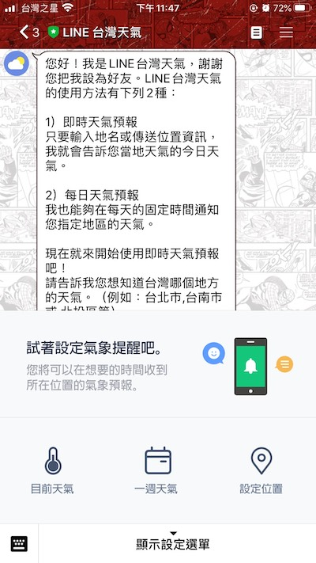</p>
<h4 id="基本架構說明"><a href="#基本架構說明" class="headerlink" title="基本架構說明"></a>基本架構說明</h4><p>基本上如果沒有透過 <strong>LINE API</strong> 回應的話，就是從 <strong>LINE</strong> 的後台直接去做設定，就不會有 <strong>Client Server</strong> 這塊，那我們要做的事情很簡單，就是申請一個 <strong>LINE Bot</strong> 然後建立我們的 <strong>Client Server</strong>。</p>
<p>大致上流程就是 <strong>LINE Users</strong> 會發起要求或回應，然後 <strong>LINE Server</strong> 會判斷要傳送訊息給哪一個 <strong>LINE Bot</strong>，並解確認是否有起用 <strong>Webhook URL</strong> 並且有設定 <strong>Webhook 網址目標</strong>，如果沒有就不會傳送訊息給任何伺服器。</p>
<p>如果有設定 <strong>Webhook 目標網址</strong>，<strong>LINE Server</strong> 會將 <strong>LINE Users</strong> 的使用者訊息，傳送一個 <strong>HTTP POST Resquest</strong>，在 <strong>Resquest</strong> 中會定義使用者的訊息類型。</p>
<blockquote>
<p><em>其中在 <strong>LINE Server</strong> 轉傳訊息時，會將 <strong>LINE Bot</strong> 的 <strong>Channel Secret</strong> 進行 <strong>SHA-256</strong>(<strong>註1</strong>) 加密並附加在 <strong>HTTP POST Resquest</strong> 的 <strong>Header</strong> 的 <strong>X-Line-Signature</strong> 欄位，讓 <strong>Client Server</strong> 收到訊息可以驗證此欄位，證明訊息發送者身份是不是真的 <strong>LINE Server</strong>。</em></p>
</blockquote>
<p>每一個 LINE Bot 都有他自己的 <strong>頻道識別編號</strong>(<strong>Channel ID</strong>)，用來區分不同的聊天機器人，我們有兩種方式來管理我們的機器人，一種就是上面提到的 <strong>LINE 後台</strong>，一種即是我們要提到的 <strong>Messaging API</strong>。</p>
<p>簡單說會用到的就是 <strong>Channel ID</strong>、<strong>Channel Secret</strong>(<strong>頻道密鑰</strong>) 及 <strong>Channel access token</strong>(<strong>頻道存取令牌</strong>)，最後還有 <strong>UserId</strong> 這四種。</p>
<blockquote>
<p><strong>這邊並不是一般使用者自行設定的ID 是一組30位數的英數字混合字串 不同 LINE Bot 將會有不同的 UserID</strong></p>
</blockquote>
<p>最後在 <strong>Client Server</strong> 我們需要建立一個 <strong>Web API</strong> 服務的伺服器，接著收到不同類型的使用者訊息之後，需要回應(Response)<strong>HTTP OK</strong> 的狀態碼(<strong>ex:HTTP Status Code:200 註2</strong>)給 <strong>LINE Server</strong> 伺服器確認。</p>
<p><strong>Client Server</strong> 就是我們可以設計程式的地方，可以把我們的爬蟲放這邊，透過 <strong>Messaging API</strong> 我們可以傳送各式各樣的訊息，譬如文字、圖片、選單…等等。</p>
<p>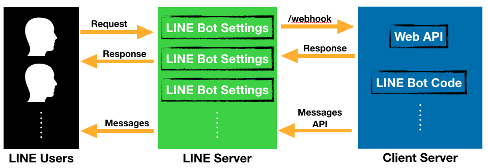</p>
<blockquote>
<p><em>註1: SHA256是SHA-2下細分出的一種演算法。SHA-2，名稱來自於安全雜湊演算法2（英語：Secure Hash Algorithm 2）的縮寫，一種密碼雜湊函式演算法標準，由美國國家安全域性研發，屬於SHA演算法之一，是SHA-1的後繼者。詳細可參考 <a href="https://codertw.com/%E7%A8%8B%E5%BC%8F%E8%AA%9E%E8%A8%80/602774/" target="_blank" rel="noopener">SHA256演算法原理詳解</a></em></p>
</blockquote>
<blockquote>
<p><em>註2: 200為請求成功，相關代碼查詢可以參考 <a href="https://developer.mozilla.org/zh-TW/docs/Web/HTTP/Status" target="_blank" rel="noopener">HTTP 狀態碼</a></em></p>
</blockquote>
<hr>
<h3 id="LINE-Bot-申請"><a href="#LINE-Bot-申請" class="headerlink" title="LINE Bot 申請"></a>LINE Bot 申請</h3><h4 id="LINE-Bot-基本介紹-1"><a href="#LINE-Bot-基本介紹-1" class="headerlink" title="LINE Bot 基本介紹"></a>LINE Bot 基本介紹</h4><p>根據申請人的資格分為兩種帳號『<strong>一般帳號</strong>』與『<strong>認證帳號</strong>』還有最後一種是無法自行申請的『<strong>LINE企業帳號</strong>』，差別在下方。</p>
<ol>
<li>一般帳號<br>普遍人物都能申請，但是發送的訊息內容需要遵循法規以及LINE官方帳號使用條款</li>
<li>認證帳號<br>政府立案合法經營的客戶，要符合審核條件即可成為認證帳號</li>
<li>企業帳號</li>
</ol>
<p>-&gt; 透過LINE的邀請，通常會是在LINE上深度經營的帳戶。</p>
<p>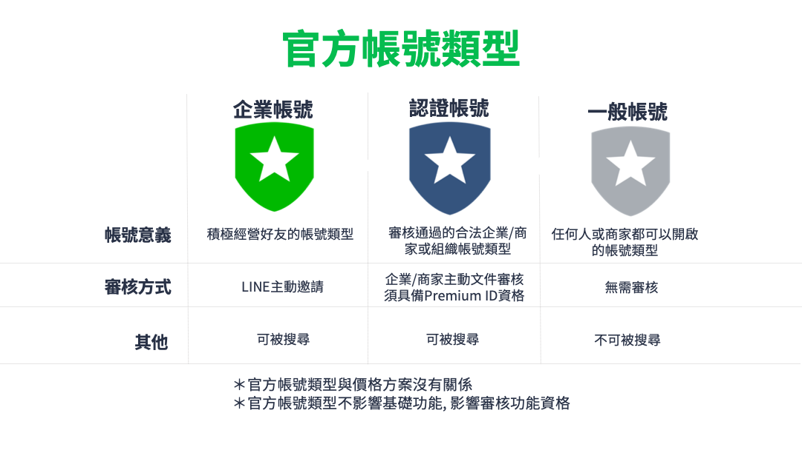</p>
<p>關於收費不再依照付費區分訊息使用量，改採用訊息發送數量，就是像發簡訊一樣，分成三種用量『<strong>低用量</strong>』、『<strong>入門版</strong>』、『<strong>進階版</strong>』三種，值得一提的是 <strong>2.0版本</strong> 沒有了好友的上限。</p>
<p>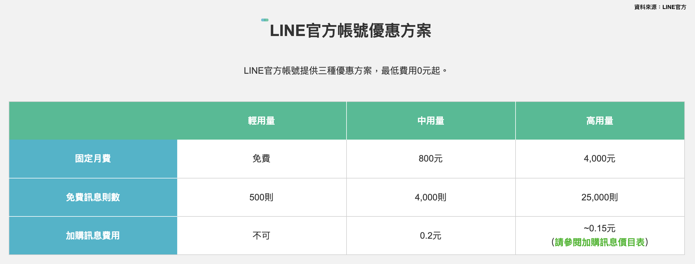</p>
<h4 id="LINE-Bot-帳號申請"><a href="#LINE-Bot-帳號申請" class="headerlink" title="LINE Bot 帳號申請"></a>LINE Bot 帳號申請</h4><p>廢話說了一堆就開始拿起你的釣竿吧！首先我們要先申請一組 <strong>LINE Bot 帳號</strong>，進入 <a href="https://www.linebiz.com/" target="_blank" rel="noopener">LINE for Business</a> ，我們會申請一個低用量方案的 <strong>Messaging API</strong>。</p>
<p>點選右上方的『<strong>線上申請官方帳號</strong>』，進入後會要求登入 <strong>LINE帳號</strong>，或直接進入『<a href="https://manager.line.biz/" target="_blank" rel="noopener"><strong>LINE Official Account Manager</strong></a>』進入後點選 <strong>建立LINE官方帳號</strong>。</p>
<p>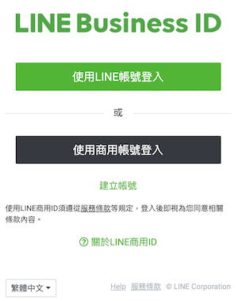</p>
<p>基本上填寫『<strong>帳號名稱</strong>』、『<strong>電子郵件</strong>』與選擇『<strong>業種</strong>』，點擊確認之後再確認一次資訊然後點擊『<strong>提交</strong>』送出。</p>
<blockquote>
<p><em>LINE官方帳號是隨機ID，如果想購買專屬ID，可以到 <a href="https://manager.line.biz/" target="_blank" rel="noopener"><strong>LINE Official Account Manager</strong></a> 的『設定』-&gt;『帳務專區』-&gt;『專屬ID』。</em></p>
</blockquote>
<h4 id="LINE-Messaging-API-啟用"><a href="#LINE-Messaging-API-啟用" class="headerlink" title="LINE Messaging API 啟用"></a>LINE Messaging API 啟用</h4><p>在 <strong>LINE Official Account Manager</strong> 頁面左上角區域，可以看到目前官方帳號資訊。</p>
<p>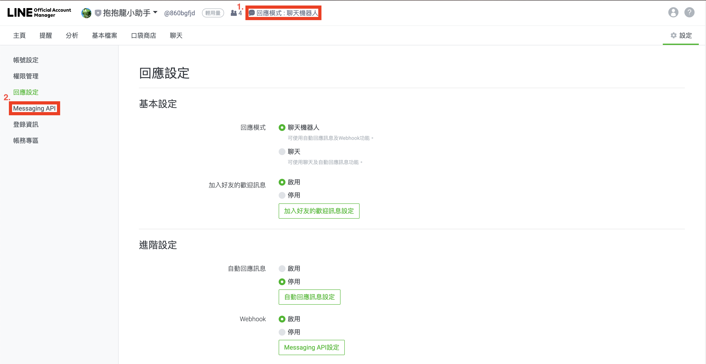</p>
<p>中間會有 <strong>狀態 未使用</strong>，點擊下方按鈕 <strong>啟用Messaging API</strong>，接著會跳出選擇提供者，目的在於讓企業或使用者管理多個聊天機器人，選取『<strong>建立使用者</strong>』，並且輸入新的『<strong>提供者名稱</strong>』，然後按下同意，<strong>設定隱私權政策</strong> 及 <strong>服務條款</strong> 可以跳過，最後確認資訊並點下確定啟用。</p>
<p>接下來再回來看剛剛那個頁面，會發現需要填入 <strong>Channel資訊</strong> 及 <strong>Webhook網址</strong>。</p>
<p>我們先進入 <a href="https://developers.line.biz/console/" target="_blank" rel="noopener"><strong>開發人員管理介面</strong></a>，前往 <strong>提供者列表</strong>(<strong>Provider List</strong>)，選擇剛剛建立的提供者。</p>
<p>之後點擊 <strong>Create New Channel</strong> 進入，在選擇 <strong>Messaging API</strong>，另外兩個暫時不會用到。</p>
<p>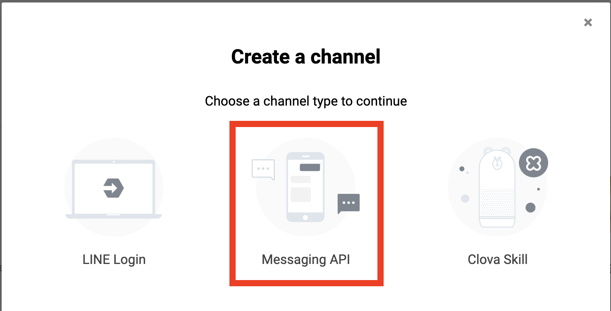</p>
<h4 id="Channel-Access-Token-頻道存取令牌"><a href="#Channel-Access-Token-頻道存取令牌" class="headerlink" title="Channel Access Token 頻道存取令牌"></a>Channel Access Token 頻道存取令牌</h4><p>還記得剛剛的 <strong>Channel資訊</strong> 都是空的嗎？在我們建立完新的 <strong>Messaging API</strong> 後，找到 <strong>Messaging API</strong> 的標頭點下去，往下滑動找到 <strong>Channel access token (long-lived)</strong> 然後點擊 <strong>Issue</strong> 按鈕產生一組新的 <strong>Channel access token</strong>(<strong>頻道存取令牌</strong>)，接著會跳出一個彈窗，選擇 <strong>0 hours</strong>，目的在於不讓這個頻道存取令牌過期。</p>
<p>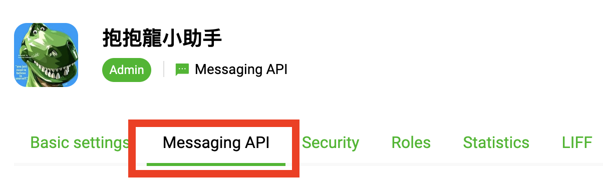</p>
<p>然後把這行複製更改掉原本空的 <strong>Channel資訊</strong> 的 <strong>Channel secret</strong>，在找到剛剛的頁面，複製標頭 <strong>Basic settings</strong> 裡的 <strong>Channel ID</strong> 貼到剛剛 <strong>Channel資訊</strong> 的 <strong>Channel ID</strong>。</p>
<p>到此LINE Bot建置基本上到一個段落，接下來我們會直接透過 <strong>Heroku</strong> 架設一個伺服器。</p>
<blockquote>
<p><em>如果想要使用本機測試，可以嘗試使用 <a href="https://ngrok.com/" target="_blank" rel="noopener">Ngrok</a>，詳細可以參考 <a href="https://5xruby.tw/posts/easy-ngrok-by-nginx-ssh-tunnel/" target="_blank" rel="noopener">ngrok 不求人：自己搭一個窮人版的 ngrok 服務</a> 搭建一個 <strong>本地 server</strong>，之後再把上方提到原本空的 <strong>Webhook網址</strong> 填入自己的 Ngrok 網址。之後如果有更新會再補上教學。</em></p>
</blockquote>
<hr>
<p></p>
<h3 id="LINE-Bot-Webhook-伺服器-建置"><a href="#LINE-Bot-Webhook-伺服器-建置" class="headerlink" title="LINE Bot Webhook 伺服器 建置"></a>LINE Bot Webhook 伺服器 建置</h3><p>透過 <strong>Heroku</strong>(註3) 的免費方案可以執行一個伺服器，但是伺服器 <strong>30分鐘</strong> 內沒有任何連線，程式會進入休眠，不過再次連線只是需要一點等待時間即可。</p>
<h4 id="Heroku-帳號申請"><a href="#Heroku-帳號申請" class="headerlink" title="Heroku 帳號申請"></a>Heroku 帳號申請</h4><p>首先進入 <a href="https://signup.heroku.com/" target="_blank" rel="noopener">Heroku 網站</a> 申請帳號，輸入紅色米字號的必要輸入資訊後送出，然後到信箱點擊驗證信件的網址驗證，最後到彈出的網頁輸入密碼，完成申請。</p>
<h4 id="Heroku-Cli-安裝"><a href="#Heroku-Cli-安裝" class="headerlink" title="Heroku Cli 安裝"></a>Heroku Cli 安裝</h4><p>接著我們必須安裝 <strong>Heroku Cli</strong>，前往 <a href="https://devcenter.heroku.com/articles/heroku-cli" target="_blank" rel="noopener">Heroku 網站 Cli 下載點</a>，依照你的作業系統下載安裝。</p>
<h4 id="Git-版本控制軟體"><a href="#Git-版本控制軟體" class="headerlink" title="Git 版本控制軟體"></a>Git 版本控制軟體</h4><p>這邊就不多做 Git 安裝介紹，有興趣可以參考 <a href="https://progressbar.tw/posts/1" target="_blank" rel="noopener">進度條</a>。</p>
<p></p>
<blockquote>
<p><em>註3: Heroku是一個支援多種程式語言的雲平台即服務。簡單說他就是一個伺服器，別人可以透過他給你的網址，執行你的程式；這個雲平台的優點是可以免費使用，所以你並不需要去自行架設或是擔心剛入門就要準備大量銀彈去繳學費。</em></p>
</blockquote>
<hr>
<h3 id="LINE-Bot-與日幣爬蟲應用"><a href="#LINE-Bot-與日幣爬蟲應用" class="headerlink" title="LINE Bot 與日幣爬蟲應用"></a>LINE Bot 與日幣爬蟲應用</h3><p>在建立一個新專案之前，這邊必須要來套用上次的爬蟲應用，但是要怎麼跟 LINE 結合呢？這邊就需要用到 <strong>LIEN</strong> 官方的 <strong>Node.js SDK</strong>，官方其實提供了好幾種的程式語言版本，但我幾經思考後還是選擇了 <strong>Node.js</strong> 畢竟 <strong>JavaScript</strong> 還是能多少無痛上手嘛(笑…</p>
<p>那怎麼引入套件可以參考之前的文章 <a href="https://rexhung0302.github.io/2019/06/18/20190618/#%E9%A1%8C%E5%A4%96%E8%A9%B1-node-modules-%E5%9C%96%E6%9B%B8%E9%A4%A8" target="_blank" rel="noopener">[TOOL Notes]-關於Webpack</a>，這邊就不再次說明，直接上<strong>Code</strong>。</p>
<figure class="highlight plain"><table><tr><td class="gutter"><pre><span class="line">1</span><br><span class="line">2</span><br><span class="line">3</span><br><span class="line">4</span><br><span class="line">5</span><br><span class="line">6</span><br><span class="line">7</span><br><span class="line">8</span><br><span class="line">9</span><br><span class="line">10</span><br><span class="line">11</span><br><span class="line">12</span><br><span class="line">13</span><br><span class="line">14</span><br><span class="line">15</span><br><span class="line">16</span><br><span class="line">17</span><br><span class="line">18</span><br><span class="line">19</span><br><span class="line">20</span><br><span class="line">21</span><br><span class="line">22</span><br><span class="line">23</span><br><span class="line">24</span><br><span class="line">25</span><br><span class="line">26</span><br><span class="line">27</span><br><span class="line">28</span><br><span class="line">29</span><br><span class="line">30</span><br><span class="line">31</span><br><span class="line">32</span><br><span class="line">33</span><br><span class="line">34</span><br><span class="line">35</span><br><span class="line">36</span><br><span class="line">37</span><br><span class="line">38</span><br><span class="line">39</span><br><span class="line">40</span><br><span class="line">41</span><br><span class="line">42</span><br><span class="line">43</span><br><span class="line">44</span><br><span class="line">45</span><br><span class="line">46</span><br><span class="line">47</span><br><span class="line">48</span><br><span class="line">49</span><br><span class="line">50</span><br><span class="line">51</span><br></pre></td><td class="code"><pre><span class="line">&apos;use strict&apos;;</span><br><span class="line">const line = require(&apos;@line/bot-sdk&apos;); // line 的 sdk</span><br><span class="line">const express = require(&apos;express&apos;); // node.js 套件</span><br><span class="line"></span><br><span class="line">var crawler = require(&apos;./crawler&apos;); // 爬蟲的部分</span><br><span class="line"></span><br><span class="line">// LINE 的 ENV 設定</span><br><span class="line">const config = &#123;</span><br><span class="line">    channelAccessToken: process.env.CHANNEL_ACCESS_TOKEN,</span><br><span class="line">    channelSecret: process.env.CHANNEL_SECRET,</span><br><span class="line">&#125;;</span><br><span class="line">const client = new line.Client(config);</span><br><span class="line">const app = express();</span><br><span class="line">app.post(&apos;/callback&apos;, line.middleware(config), (req, res) =&gt; &#123;</span><br><span class="line">    Promise</span><br><span class="line">        .all(req.body.events.map(handleEvent))</span><br><span class="line">        .then((result) =&gt; res.json(result))</span><br><span class="line">        .catch((err) =&gt; &#123;</span><br><span class="line">            console.error(err);</span><br><span class="line">            res.status(500).end();</span><br><span class="line">        &#125;);</span><br><span class="line">&#125;);</span><br><span class="line"></span><br><span class="line">// 測試回應用</span><br><span class="line">app.get(&apos;/&apos;, (req, res) =&gt; &#123;</span><br><span class="line">    res.json(&quot;ok&quot;);</span><br><span class="line">&#125;);</span><br><span class="line"></span><br><span class="line">function handleEvent(event) &#123;</span><br><span class="line">    // 判斷是否為 Webhook URL 測試</span><br><span class="line">    if (event.replyToken === &quot;00000000000000000000000000000000&quot; || event.replyToken === &quot;ffffffffffffffffffffffffffffffff&quot;) &#123;</span><br><span class="line">        return Promise.resolve(null);</span><br><span class="line">    &#125;</span><br><span class="line">    // 設定關鍵字 查詢匯率</span><br><span class="line">    else if (event.type === &apos;message&apos; &amp;&amp; event.message.text === &apos;告訴我日幣匯率&apos;) &#123;</span><br><span class="line">        // 跑日幣的爬蟲程式碼</span><br><span class="line">        crawler.crawler(&apos;JPY&apos;).then((res) =&gt; &#123;</span><br><span class="line">            const msgToUser = &#123;</span><br><span class="line">                type: &apos;text&apos;,</span><br><span class="line">                text: `日幣現金匯率為-&gt;$&#123;res.cashSellExchange&#125;, \n日幣即期匯率為-&gt;$&#123;res.sightSellExchange&#125;, \n詳細資訊請參考-&gt;$&#123;res.webSideUrl&#125;`,</span><br><span class="line">            &#125;</span><br><span class="line">            return client.replyMessage(event.replyToken, msgToUser);</span><br><span class="line">        &#125;);</span><br><span class="line">    &#125;</span><br><span class="line">    return Promise.resolve(null);</span><br><span class="line">&#125;</span><br><span class="line"></span><br><span class="line">const port = process.env.PORT || 3000;</span><br><span class="line">app.listen(port, () =&gt; &#123;</span><br><span class="line">    console.log(`listening on $&#123;port&#125;`);</span><br><span class="line">&#125;);</span><br></pre></td></tr></table></figure>

<p>這邊我們很快速的講解過去，首先是 <strong>use strict</strong> 嚴謹模式(有興趣可以參考我的 <a href="https://rexhung0302.github.io/2019/10/09/20191009/" target="_blank" rel="noopener">JavaScript 系列</a>)，接下來引入 <strong>LINE SDK</strong> 及 <strong>Node.js express</strong> 框架，隨後引入 <strong>crawler</strong> 這隻檔案，讓 <strong>Code</strong> 可以比較乾淨，等一下會講解另一隻檔案如何讓現在的檔案吃到。</p>
<p>接著 <strong>config</strong> 就是設定 <strong>LINE</strong> 的環境變數，這邊等等也會做講解，在程式碼完成之後，要傳上 <strong>Heroku</strong> 之前，會把環境變數設定上去。</p>
<p>最後在下面的 <strong>handleEvent</strong> 主要是判斷 <strong>event</strong> 的事件是，<br>接收到訊息該如何回應，裡面可以新增各式各樣的判斷，比如對方傳文字來或是圖片來，你應該要如何回應。在剛開始 <strong>LINE</strong> 那邊會有判斷是否為 <strong>Webhook URL</strong> 測試。在 Line Server 那邊會傳來 <strong>replyToken === “00000000000000000000000000000000”</strong> 或 <strong>replyToken === “ffffffffffffffffffffffffffffffff”</strong> 若收到這樣的訊息可以不做回應。</p>
<p>接著就是 <strong>event.type === ‘message’</strong> 而且 <strong>event.message.text === ‘告訴我日幣匯率’</strong>；意思就是如果收到訊息且內容是『<strong>告訴我日幣匯率</strong>』，那就去跑另一個 <strong>JavaScript</strong> 檔案 <strong>crawler</strong> 的 <strong>Function -&gt; crawler()</strong>。</p>
<p>不論結果如何，記得要 <strong>return Promise.resolve(null)</strong>;。</p>
<h4 id="接下來會簡單講解一下另外一個頁面的程式碼"><a href="#接下來會簡單講解一下另外一個頁面的程式碼" class="headerlink" title="接下來會簡單講解一下另外一個頁面的程式碼"></a>接下來會簡單講解一下另外一個頁面的程式碼</h4><figure class="highlight plain"><table><tr><td class="gutter"><pre><span class="line">1</span><br><span class="line">2</span><br><span class="line">3</span><br><span class="line">4</span><br><span class="line">5</span><br><span class="line">6</span><br><span class="line">7</span><br><span class="line">8</span><br><span class="line">9</span><br><span class="line">10</span><br><span class="line">11</span><br><span class="line">12</span><br><span class="line">13</span><br><span class="line">14</span><br><span class="line">15</span><br><span class="line">16</span><br><span class="line">17</span><br><span class="line">18</span><br><span class="line">19</span><br><span class="line">20</span><br><span class="line">21</span><br><span class="line">22</span><br><span class="line">23</span><br><span class="line">24</span><br><span class="line">25</span><br><span class="line">26</span><br><span class="line">27</span><br><span class="line">28</span><br><span class="line">29</span><br><span class="line">30</span><br><span class="line">31</span><br><span class="line">32</span><br><span class="line">33</span><br><span class="line">34</span><br><span class="line">35</span><br><span class="line">36</span><br><span class="line">37</span><br><span class="line">38</span><br><span class="line">39</span><br><span class="line">40</span><br><span class="line">41</span><br><span class="line">42</span><br><span class="line">43</span><br><span class="line">44</span><br><span class="line">45</span><br><span class="line">46</span><br><span class="line">47</span><br><span class="line">48</span><br><span class="line">49</span><br><span class="line">50</span><br><span class="line">51</span><br><span class="line">52</span><br><span class="line">53</span><br><span class="line">54</span><br><span class="line">55</span><br><span class="line">56</span><br><span class="line">57</span><br><span class="line">58</span><br><span class="line">59</span><br><span class="line">60</span><br><span class="line">61</span><br><span class="line">62</span><br><span class="line">63</span><br><span class="line">64</span><br><span class="line">65</span><br><span class="line">66</span><br><span class="line">67</span><br><span class="line">68</span><br><span class="line">69</span><br><span class="line">70</span><br><span class="line">71</span><br><span class="line">72</span><br><span class="line">73</span><br><span class="line">74</span><br><span class="line">75</span><br><span class="line">76</span><br><span class="line">77</span><br><span class="line">78</span><br><span class="line">79</span><br><span class="line">80</span><br><span class="line">81</span><br><span class="line">82</span><br></pre></td><td class="code"><pre><span class="line">const request = require(&apos;request&apos;); // 抓整個 html</span><br><span class="line">const cheerio = require(&quot;cheerio&quot;); // 用來抓 element 的 類似 JQuery 的選擇器</span><br><span class="line">const fs = require(&quot;fs&quot;);</span><br><span class="line"></span><br><span class="line">// 抓取日幣的爬蟲</span><br><span class="line">function crawler(type) &#123;</span><br><span class="line">    console.log(&apos;type&apos;, type);</span><br><span class="line">    return new Promise((resolve, reject) =&gt; &#123;</span><br><span class="line">        request(&#123;</span><br><span class="line">            url: &quot;http://rate.bot.com.tw/Pages/Static/UIP003.zh-TW.htm&quot;,</span><br><span class="line">            method: &quot;GET&quot;</span><br><span class="line">        &#125;, function(error, response, body) &#123;</span><br><span class="line">            if (error || !body) &#123;</span><br><span class="line">                return &apos;nullnull&apos;;</span><br><span class="line">            &#125; else &#123;</span><br><span class="line">                const $ = cheerio.load(body); // 載入 body</span><br><span class="line">                const tr = $(&quot;tbody tr&quot;); // 抓取每一行的 tr</span><br><span class="line">                const result = []; // 建立一個儲存結果的容器</span><br><span class="line">                const bankDate = $(&quot;#h1_small_id&quot;); // 放台銀牌告匯率日期</span><br><span class="line"></span><br><span class="line">                let JPY_cashSellExchange = null; // 用來放日幣現金匯率的</span><br><span class="line">                let JPY_sightSellExchange = null; // 用來放日幣即期匯率的</span><br><span class="line">                let AUD_cashSellExchange = null; // 用來放澳幣現金匯率的</span><br><span class="line">                let AUD_sightSellExchange = null; // 用來放澳幣即期匯率的</span><br><span class="line">                let webSideUrl = &apos;http://rate.bot.com.tw/Pages/Static/UIP003.zh-TW.htm&apos;;</span><br><span class="line">                let resDate = null; // 用來放要回傳回去的匯率資訊</span><br><span class="line"></span><br><span class="line">                for (var i = 0; i &lt; tr.length; i++) &#123;</span><br><span class="line">                    const coinType = tr.eq(i).find(&apos;.hidden-phone.print_show&apos;).text().trim(); // 幣別</span><br><span class="line">                    const cashBuyExchange = tr.eq(i).children().eq(1).text(); // 現金匯率(銀行買入)</span><br><span class="line">                    const cashSellExchange = tr.eq(i).children().eq(2).text(); // 現金匯率(銀行賣出)</span><br><span class="line">                    const sightBuyExchange = tr.eq(i).children().eq(3).text(); // 即期匯率(銀行買入)</span><br><span class="line">                    const sightSellExchange = tr.eq(i).children().eq(4).text(); // 即期匯率(銀行賣出)</span><br><span class="line">                    const bankDateText = bankDate.text(); // 當日日期</span><br><span class="line"></span><br><span class="line">                    // 抓日圓</span><br><span class="line">                    if (type === &apos;JPY&apos; &amp;&amp; coinType === &apos;日圓 (JPY)&apos;) &#123;</span><br><span class="line">                        // 放進 JSON 檔</span><br><span class="line">                        result.push(Object.assign(&#123; bankDateText, coinType, cashBuyExchange, cashSellExchange, sightBuyExchange, sightSellExchange &#125;));</span><br><span class="line"></span><br><span class="line">                        // 更新日幣變數</span><br><span class="line">                        JPY_cashSellExchange = cashSellExchange;</span><br><span class="line">                        JPY_sightSellExchange = sightSellExchange;</span><br><span class="line"></span><br><span class="line">                        console.log(&apos;跑爬蟲的 Function 裡面&apos;, &apos;現金匯率-&gt;&apos;, JPY_cashSellExchange, &apos;即期匯率-&gt;&apos;, JPY_sightSellExchange)</span><br><span class="line"></span><br><span class="line">                        resDate = &#123;</span><br><span class="line">                            cashSellExchange: JPY_cashSellExchange, // 現金匯率</span><br><span class="line">                            sightSellExchange: JPY_sightSellExchange, // 即期匯率</span><br><span class="line">                            webSideUrl: webSideUrl, // 爬蟲網站</span><br><span class="line">                        &#125;</span><br><span class="line"></span><br><span class="line">                    &#125;</span><br><span class="line"></span><br><span class="line">                    // 抓澳幣</span><br><span class="line">                    if (type === &apos;AUD&apos; &amp;&amp; coinType === &apos;澳幣 (AUD)&apos;) &#123;</span><br><span class="line">                        // 放進 JSON 檔</span><br><span class="line">                        result.push(Object.assign(&#123; bankDateText, coinType, cashBuyExchange, cashSellExchange, sightBuyExchange, sightSellExchange &#125;));</span><br><span class="line"></span><br><span class="line">                        // 更新日幣變數</span><br><span class="line">                        AUD_cashSellExchange = cashSellExchange;</span><br><span class="line">                        AUD_sightSellExchange = sightSellExchange;</span><br><span class="line"></span><br><span class="line">                        console.log(&apos;跑爬蟲的 Function 裡面&apos;, &apos;現金匯率-&gt;&apos;, AUD_cashSellExchange, &apos;即期匯率-&gt;&apos;, AUD_sightSellExchange)</span><br><span class="line"></span><br><span class="line">                        resDate = &#123;</span><br><span class="line">                            cashSellExchange: AUD_cashSellExchange, // 現金匯率</span><br><span class="line">                            sightSellExchange: AUD_sightSellExchange, // 即期匯率</span><br><span class="line">                            webSideUrl: webSideUrl, // 爬蟲網站</span><br><span class="line">                        &#125;</span><br><span class="line"></span><br><span class="line">                    &#125;</span><br><span class="line"></span><br><span class="line">                &#125;</span><br><span class="line">                // 回傳資訊</span><br><span class="line">                resolve(resDate);</span><br><span class="line">            &#125;</span><br><span class="line">        &#125;);</span><br><span class="line">    &#125;);</span><br><span class="line">&#125;;</span><br><span class="line">// 輸出這個 JS</span><br><span class="line">exports.crawler = crawler;</span><br></pre></td></tr></table></figure>

<p>基本上與之前的程式碼大同小異，差別在於這次是把程式碼包進 <strong>new Promise</strong>，最後再靠 <strong>exports.crawler = crawler;</strong> 就能在其他檔案使用了。</p>
<h4 id="一枝穿雲箭"><a href="#一枝穿雲箭" class="headerlink" title="一枝穿雲箭"></a>一枝穿雲箭</h4><p>最後這邊我們就可以把程式上傳了，在專案的目錄下，先輸入：</p>
<figure class="highlight plain"><table><tr><td class="gutter"><pre><span class="line">1</span><br></pre></td><td class="code"><pre><span class="line">$ heroku create 名稱(如不填 系統會隨機給一個名稱)</span><br></pre></td></tr></table></figure>

<p>其中要小心一些 <strong>heroku</strong> 的規定，比如開頭不能大寫之類的。</p>
<p>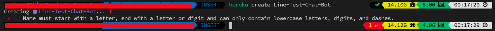</p>
<p>看到下方這張圖才代表成功。</p>
<p>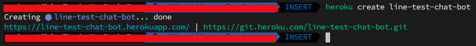</p>
<blockquote>
<p><em>免費的方案似乎有專案的數量上限限制，目前創建到第五個以上就會被拒絕，如理解有誤敬請糾正，非常感謝。</em></p>
</blockquote>
<p>隨後執行下列幾行，然後等待： </p>
<figure class="highlight plain"><table><tr><td class="gutter"><pre><span class="line">1</span><br><span class="line">2</span><br><span class="line">3</span><br><span class="line">4</span><br><span class="line">5</span><br><span class="line">6</span><br><span class="line">7</span><br><span class="line">8</span><br><span class="line">9</span><br></pre></td><td class="code"><pre><span class="line">$ git init      // git init 初始化專案</span><br><span class="line"></span><br><span class="line">$ heroku git:remote -a &lt;Heroku 專案 名稱&gt;</span><br><span class="line"></span><br><span class="line">$ touch .gitingnore // 這邊 把不要上傳的 檔案 資料夾 都寫入這裡面</span><br><span class="line"></span><br><span class="line">$ git commit -am &quot;init my chatBox&quot;</span><br><span class="line"></span><br><span class="line">$ git push heroku master</span><br></pre></td></tr></table></figure>

<p>整個操作起來其實跟推上 <strong>GitHub</strong> 非常像；傳送上去之後如果要看到作品可以直接輸入 <a href="https://dashboard.heroku.com/apps" target="_blank" rel="noopener">https://dashboard.heroku.com/apps</a> 進入後點擊創建的那個專案。</p>
<p>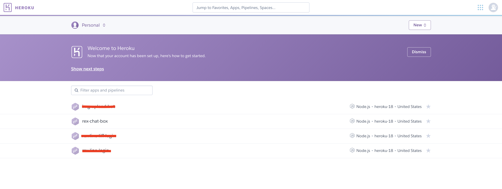</p>
<p>接著到右上角點擊 <strong>Open app</strong>，就可以看到了，</p>
<p>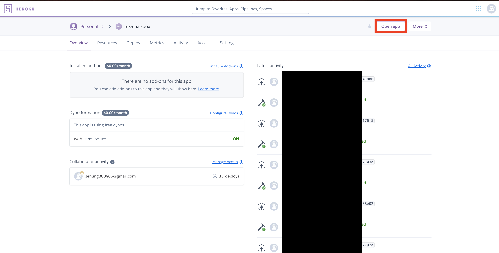</p>
<p>如果想看見程式的 <strong>log</strong> ，那就點擊右上角的 <strong>View logs</strong>，就可以查看你的程式碼有沒有錯誤了。</p>
<h4 id="錯誤千軍萬馬來相見"><a href="#錯誤千軍萬馬來相見" class="headerlink" title="錯誤千軍萬馬來相見"></a>錯誤千軍萬馬來相見</h4><p>這時候你可能會發現錯誤，其實是因為前面我們有提到，程式碼剛開始有 <strong>config</strong> 但是我們沒有只接填寫，變成他會去抓 <strong>Heroku</strong> 的設定，如果沒設定就會出錯。</p>
<p>輸入下面的程式碼(看情況自己增加)：</p>
<figure class="highlight plain"><table><tr><td class="gutter"><pre><span class="line">1</span><br><span class="line">2</span><br><span class="line">3</span><br></pre></td><td class="code"><pre><span class="line">$ heroku config:set CHANNEL_ACCESS_TOKEN=&quot;&lt;Your LINE Bot Token&gt;&quot;</span><br><span class="line"></span><br><span class="line">$ heroku config:set CHANNEL_SECRET=&quot;&lt;Your LINE Bot Srcret&gt;&quot;</span><br></pre></td></tr></table></figure>

<p>最後把 Open APP 打開後的網址貼到最上面我們提到的 <strong>Webhook網址</strong>，大功告成啦！</p>
<hr>
<h2 id="Conclusion-amp-結論"><a href="#Conclusion-amp-結論" class="headerlink" title="Conclusion &amp; 結論"></a>Conclusion &amp; 結論</h2><p>其實自己摸了好一陣子的 <strong>LINE</strong> 但是一直都沒有去瞭解過他怎麼執行還有流程是怎麼樣，這次剛好在玩爬蟲，就順水推舟連 <strong>Node.js</strong> 都一起研究研究，所以如果有講不好的地方還敬請歡迎指教。</p>
<p><strong>LINE Bot</strong> 其實還有很多好玩的地方，這就等著大家自己去發掘啦～</p>
</div></article><div class="post-copyright"><div class="post-copyright__author"><span class="post-copyright-meta">文章作者: </span><span class="post-copyright-info"><a href="mailto:undefined" target="_blank" rel="noopener">RexHung</a></span></div><div class="post-copyright__type"><span class="post-copyright-meta">文章鏈接: </span><span class="post-copyright-info"><a href="https://github.com/RexHung0302/RexHung0302.github.io/2019/12/01/20191201/">https://github.com/RexHung0302/RexHung0302.github.io/2019/12/01/20191201/</a></span></div><div class="post-copyright__notice"><span class="post-copyright-meta">版權聲明: </span><span class="post-copyright-info">本博客所有文章除特別聲明外，均採用 <a href="https://creativecommons.org/licenses/by-nc-sa/4.0/" target="_blank">CC BY-NC-SA 4.0</a> 許可協議。轉載請註明來自 <a href="https://github.com/RexHung0302/RexHung0302.github.io" target="_blank">RexHung's Blog</a>！</span></div></div><div class="tag_share"><div class="post-meta__tag-list"><a class="post-meta__tags" href="/tags/Code/">Code    </a><a class="post-meta__tags" href="/tags/Other/">Other    </a><a class="post-meta__tags" href="/tags/Crawler/">Crawler    </a></div><div class="post_share"><div class="social-share" data-image="/img/article_404.png" data-sites="facebook,twitter,wechat,weibo,qq"></div><link rel="stylesheet" href="https://cdn.jsdelivr.net/npm/social-share.js@1.0.16/dist/css/share.min.css"><script src="https://cdn.jsdelivr.net/npm/social-share.js@1.0.16/dist/js/social-share.min.js"></script></div></div><div class="post-reward"><a class="reward-button"><i class="fa fa-qrcode"></i> 打賞<div class="reward-main"><ul class="reward-all"><li class="reward-item"><div class="post-qr-code__desc">這個不能用</div></li><li class="reward-item"><div class="post-qr-code__desc">這也是示意圖</div></li></ul></div></a></div><nav class="pagination_post" id="pagination"><div class="next-post pull-full"><a href="/2019/11/04/20191104/"><div class="label">下一篇</div><div class="next_info"><span>Mac OS 使用 HomeBrew 建置 Web 開發環境</span></div></a></div></nav><div class="relatedPosts"><div class="relatedPosts_headline"><i class="fa fa-fw fa-thumbs-up" aria-hidden="true"></i><span> 相關推薦</span></div><div class="relatedPosts_list"><div class="relatedPosts_item"><a href="/2019/08/20/20190820/" title="[Tool Notes] — 關於爬蟲"><div class="relatedPosts_title">[Tool Notes] — 關於爬蟲</div></a></div><div class="relatedPosts_item"><a href="/2019/11/04/20191104/" title="Mac OS 使用 HomeBrew 建置 Web 開發環境"><div class="relatedPosts_title">Mac OS 使用 HomeBrew 建置 Web 開發環境</div></a></div><div class="relatedPosts_item"><a href="/2019/10/31/20191101/" title="萬事起頭不會難"><div class="relatedPosts_title">萬事起頭不會難</div></a></div></div><div class="clear_both"></div></div><hr><div id="post-comment"><div class="comment_headling"><i class="fa fa-comments fa-fw" aria-hidden="true"></i><span> 評論</span></div><div id="disqus_thread"></div><script>var unused = null;
var disqus_config = function () {
  this.page.url = 'https://github.com/RexHung0302/RexHung0302.github.io/2019/12/01/20191201/';
  this.page.identifier = '2019/12/01/20191201/';
  this.page.title = '[Tool Notes] — 關於爬蟲#2';
}
var d = document, s = d.createElement('script');
s.src = "https://" + 'http://rexhung0302.disqus.com/count.js' +".disqus.com/embed.js";
s.setAttribute('data-timestamp', '' + +new Date());
(d.head || d.body).appendChild(s);</script></div></div></div><footer style="background-image: url(LineBotImg_1.png)"><div id="footer"><div class="copyright">&copy;2019 By RexHung</div><div class="framework-info"><span>Power by </span><a href="http://hexo.io" target="_blank" rel="noopener"><span>Hexo</span></a><span class="footer-separator">|</span><span>Theme </span><a href="https://github.com/jerryc127/hexo-theme-butterfly"><span>Butterfly</span></a></div><div class="footer_custom_text">尊重 友善 包容！</div></div></footer></div><section class="rightside" id="rightside"><div id="rightside-config-hide"><i class="fa fa-book" id="readmode" title="閲讀模式"></i><i class="fa fa-plus" id="font_plus" title="放大字體"></i><i class="fa fa-minus" id="font_minus" title="縮小字體"></i><a class="translate_chn_to_cht" id="translateLink" href="javascript:translatePage();" title="簡繁轉換">繁</a><i class="nightshift fa fa-moon-o" id="nightshift" title="夜間模式"></i></div><div id="rightside-config-show"><div id="rightside_config" title="設置"><i class="fa fa-cog" aria-hidden="true"></i></div><a id="to_comment" href="#post-comment" title="直達評論"><i class="scroll_to_comment fa fa-comments">  </i></a><i class="fa fa-list-ul close" id="mobile-toc-button" title="目錄" aria-hidden="true"></i><i class="fa fa-arrow-up" id="go-up" title="回到頂部" aria-hidden="true"></i></div></section><script src="https://cdn.jsdelivr.net/npm/jquery@latest/dist/jquery.min.js"></script><script src="https://cdn.jsdelivr.net/npm/@fancyapps/fancybox@latest/dist/jquery.fancybox.min.js"></script><script src="https://cdn.jsdelivr.net/npm/js-cookie@2/src/js.cookie.min.js"></script><script src="/js/utils.js"></script><script src="/js/main.js"></script><script src="/js/nightshift.js"></script><script id="ribbon" src="/js/third-party/canvas-ribbon.js" size="150" alpha="0.6" zIndex="-1" data-click="false"></script><script id="ribbon" src="https://cdn.jsdelivr.net/gh/jerryc127/CDN@latest/js/piao.js"></script><script src="/js/tw_cn.js"></script><script>translateInitilization()

</script><script src="https://cdn.jsdelivr.net/npm/instant.page@1.2.2/instantpage.min.js" type="module"></script><script src="https://cdn.jsdelivr.net/npm/lozad/dist/lozad.min.js"></script><script>const observer = lozad(); // lazy loads elements with default selector as '.lozad'
observer.observe();
</script></body></html>